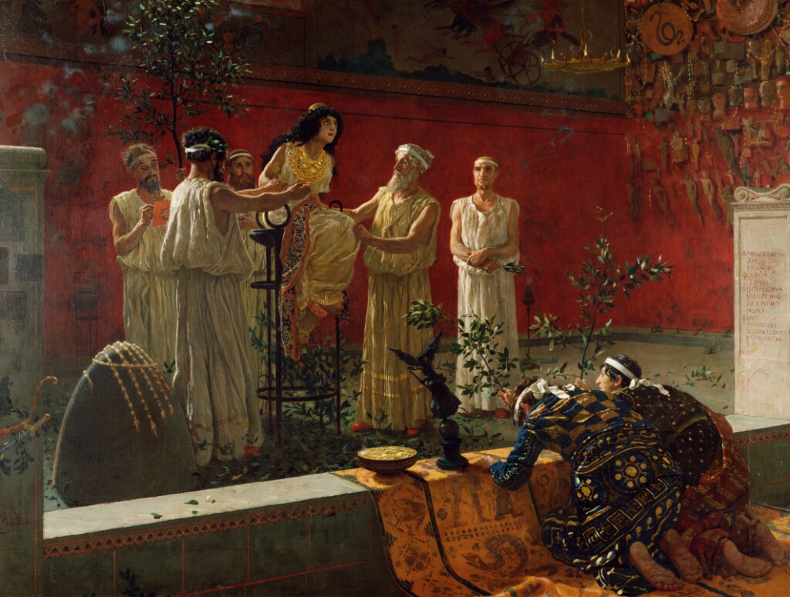

作品名 「神託」
花言葉 「勝利」「栄光」
月桂樹
「勝利」
月桂樹の葉は古代ギリシャで、月桂樹の枝を輪にして冠とた「月桂冠」を競技の優勝者などに名誉のしるしとして与えられ、ギリシャ神話の太陽神アポロンの木と称されています。このことが由来し勝利に関する花言葉が付けられたとされています。
神託
カミーロ・ミオラ
カミーロ・ミオラはフランス生まれの画家。彼は農村風景や市街地の風景などの平面的な画風を特徴としています。彼は印象派の発展に大きな貢献をしました。月桂樹とは太陽神アポロンの神木で、それはダフネの物語で伝えられている。真ん中に女司祭がいて、アポロンが神託を伝えている様子を描いている。
| 作品名 | 神託 |
| 作者 | カミーロ・ミオラ |
| 制作年 | 1880年 |
| 種類 | キャンバス・油彩 |
| 寸法 | 108cm × 142.9 cm |
| 所蔵 | J・ポール・ゲティ美術館 |